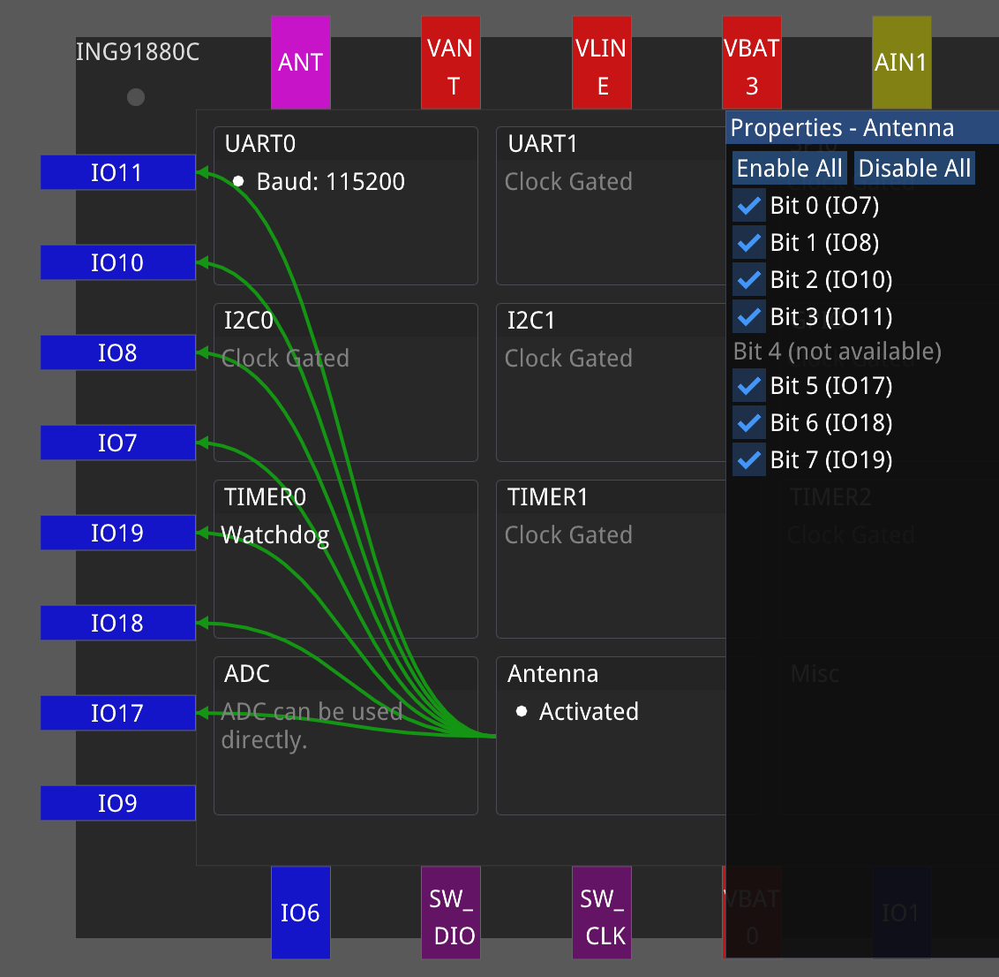
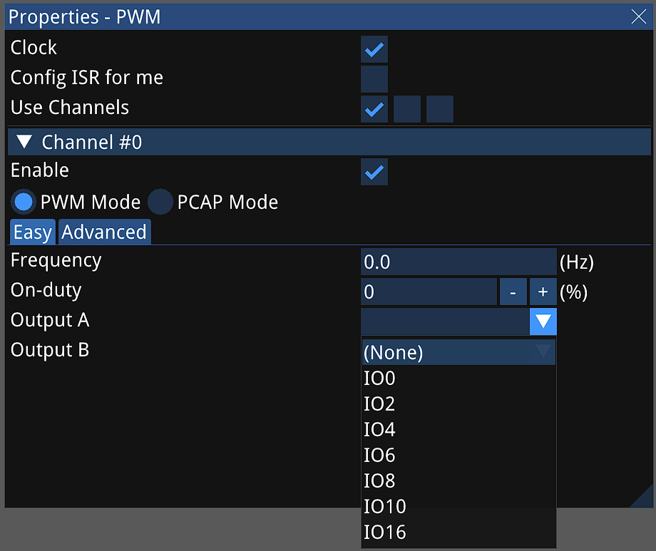
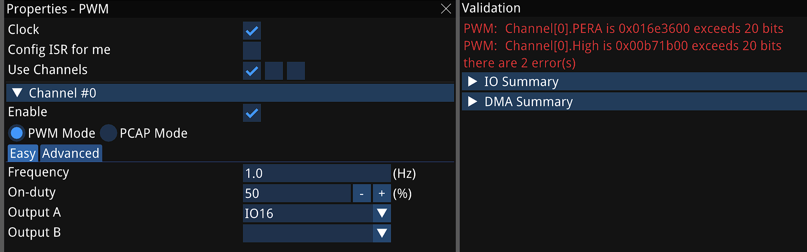
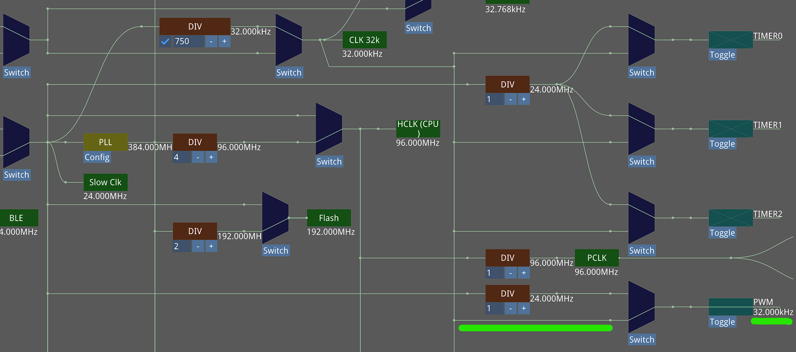
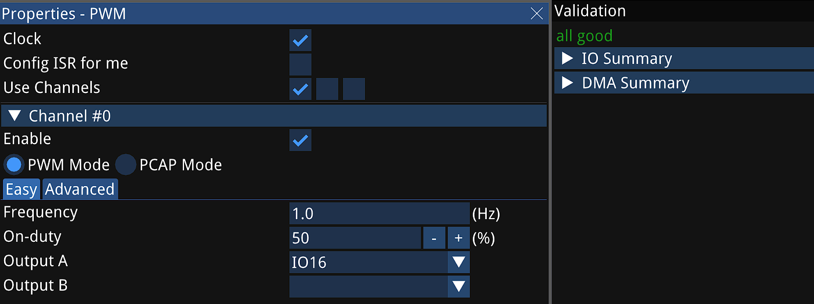
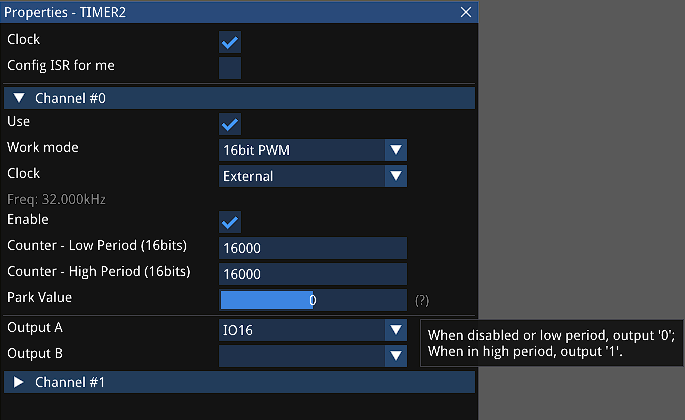

SDK 新工具 Cube 是一个图形化的初始化代码生成器，可为各种芯片型号生成 C 代码。
关键特性
这是一个交互式工具，辅助开发者正确配置芯片。各种特性总结如下：
- 支持各种芯片型号
- 以最直观的方式完成外设和时钟树配置
- 丰富、易用的图形界面
- 启发式、交互式设计
- 无需文档，使用方法一目了然，
- 自动检查，减少错误
- 管脚冲突
- 参数范围
- 低调
- 生成的代码汇总于一个文件
- 由开发者决定是否使用它生成的代码
- 不会搞乱开发者的工程设置
- 极快的运行速度
- 所有的检查都是实时进行
- 对于运行环境要求低
- 与其它基于 Eclipse 的工具相比，效率不可同日而语
- 生成的代码更高效
- 对于某些外设直接输出“计算”后的代码
- 比调用驱动程序代码更短、速度更快
在 Wizard 里右键单击一个项目，从快捷菜单中选择“Edit with Cube…”即可打开 Cube。
Cube 生成的代码保存在项目里的 /data/setup_soc.cgen 文件内，Cube 本身的数据保存在
/data/cube_SERIES.dat 文件内，这里 SERIES 为芯片系列。
要使用 Cube 生成的代码，只需 3 步：
-
在
main.c里包含../data/setup_soc.cgen；这行代码需要在
#include "ingsoc.h"之后。 -
在
setup_peripheral函数里调用cube_setup_peripherals() -
在
app_main函数的开头调用cube_soc_init()
下面通过几个具体的场景介绍 Cube 的使用。
使用场景 1. 硬件工程师设计天线阵
比如现在要用 ING91880C 设计一块天线阵，天线开关连哪个 IO 脚？ 新建一个 ING9188xx 的工程，打开 Cube，将型号选为 ING91880C，点击 Antenna，再点击菜单 Configure，弹出天线开关编辑窗口。 点击 Enable All，可以用做天线开关的 IO 脚一目了然：

使用场景 2. 硬件工程师设计 LED 指示灯
比如现在要用 ING91680A 设计一个产品，其中用到 LED 指示灯，打算使用 PWM 控制闪烁。可以使用哪个 IO 脚？ 新建一个 ING9168xx 的工程，打开 Cube，将型号选为 ING91680A，点击 PWM，再点击菜单 Configure，弹出 PWM 编辑窗口。 马上就可以直观检查哪些管脚可用做 PWM 输出：

假设硬件工程师选定使用 IO 16 控制 LED 灯，通知软件工程师。
使用场景 3. 软件工程师实现 LED 灯的 PWM 控制
软件工程师继续使用 Cube 编辑 PWM。假设软件工程师要使 LED 的初始状态为 1 秒闪烁一次，占用比 50%。 在 Easy 标签下，分别输入频率 1Hz，占空比 50%，—— 输入数据时回车生效。 这时，从验证窗口内马上可以看到存在两处错误：PWM 的 PERA、HIGH 两个数据都超出范围了， 它们最多支持 20 个比特，即最大为 0xfffff。

由于 PWM 分频比例有限，如果降低 PWM 的工作频率，就能获得更低频的输出。切换到时钟树页面，我们发现 PWM 有两种时钟可选： 一为从 Slow Clk 分频，一为使用 CLK 32k。让我们直接使用 CLK 32k。

回到 PWM 编辑窗口 Channel 0 的 Easy 标签，这时，验证窗口提示一切正常：

编译下载程序，连接必要的硬件，即可看到 LED 灯在按要求闪烁。
打开 setup_soc.cgen 文件，可看到最末尾几行的内容为：
// dump PINCTRL registers
APB_PINCTRL->OUT_CTRL[4] = 0x00001522; // 0x00001547
这是 Cube 对 PINCTRL_SetPadMux(16, IO_SOURCE_PWM0_A) 做了“计算”后得出的结果，
显然比在芯片里执行 PINCTRL_SetPadMux(16, IO_SOURCE_PWM0_A) 效率更高。
这对于 ING916XX 系列为重要：因为 PINCTRL 配置需要查一张复杂的表格，每次睡眠醒来都需要重新配置，
所以使用 Cube 既可以减小程序体积，对于降低功耗也有一定好处。
使用场景 4. 软件工程师借助 TIMER 实现 LED 灯的 PWM 控制
由于某些原因，PWM 模块另有它用，软件工程师决定改用硬件定时器输出 PWM 波形控制 LED 灯。 查阅 PinCtrl 模块的文档可知，万幸，IO 16 可用于硬件定时器 PWM 波形的 A 路输出。
选用 TIMER2 的 Channel 0 输出 PWM 信号，从编辑窗口发现计数器长度仅用 16 比特，切换到时钟树窗口， 将 TIMER2 的时钟切换为 32k。这样，两个计数数各配为 16000 就可以输出 1 秒为周期，占空比 50% 的 PWM 波形了：

这个编辑窗口还出现了一个“陌生”的 “Park Value”，将鼠标移动到 “?” 上可以了解其功能。 编译下载程序，即可看到 LED 灯在按要求闪烁。